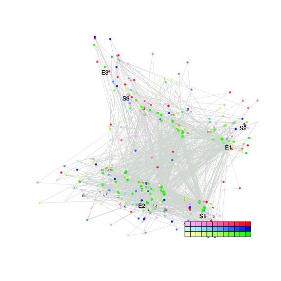

| chain # | burnin | subsample | Iterations (remaining) | command line | subdirectory | directory |
|---|---|---|---|---|---|---|
| 1 | 10000 | 1 | 90000 | bali-phy E6_AA_red3_v2_Alpha_all4Manatees_BetaGamma.fas -s 78234 -n E6_red3_v2_Alpha_all4Manatees_BetaGamma_c1 | E6_red3_v2_Alpha_all4Manatees_BetaGamma_c1-1 | /DATA/work/ONCOGENEVOL/database/trees/Bali-Phy/red3_v2/E6_all4Manatees |
| 2 | 10000 | 1 | 90000 | bali-phy E6_AA_red3_v2_Alpha_all4Manatees_BetaGamma.fas -s 42323 -n E6_red3_v2_Alpha_all4Manatees_BetaGamma_c2 | E6_red3_v2_Alpha_all4Manatees_BetaGamma_c2-1 | /DATA/work/ONCOGENEVOL/database/trees/Bali-Phy/red3_v2/E6_all4Manatees |
| 3 | 10000 | 1 | 90000 | bali-phy E6_AA_red3_v2_Alpha_all4Manatees_BetaGamma.fas -s 54392 -n E6_red3_v2_Alpha_all4Manatees_BetaGamma_c3 | E6_red3_v2_Alpha_all4Manatees_BetaGamma_c3-1 | /DATA/work/ONCOGENEVOL/database/trees/Bali-Phy/red3_v2/E6_all4Manatees |
| P(data|M) = -5527.050 +- 0.184 | Complete sample: 6154 topologies | 95% Bayesian credible interval: 1493 topologies |
Phylogeny Distribution

| Partition support: Summary |
| Partition support graph: SVG |
{kind=link}
| 50% consensus | Newick (+PP) | SVG | |||||
| 66% consensus | Newick (+PP) | SVG | |||||
| 80% consensus | Newick (+PP) | SVG | |||||
| 90% consensus | Newick (+PP) | SVG | |||||
| 95% consensus | Newick (+PP) | SVG | |||||
| 99% consensus | Newick (+PP) | SVG | |||||
| 100% consensus | Newick (+PP) | SVG | |||||
| MAP | Newick (+PP) | SVG | |||||
| greedy | Newick (+PP) | SVG |
{kind=link}
{kind=link}
{kind=link}
{kind=link}
{kind=link}
{kind=link}
{kind=link}
{kind=link}
Alignment Distribution
Partition 1
| Diff | Min. %identity | # Sites | Constant | Informative | ||||
|---|---|---|---|---|---|---|---|---|
| Initial | FASTA | HTML | Diff | 1.41% | 217 | 1 (0.461%) | 172 (79.3%) | |
| Best (WPD) | FASTA | HTML | AU | 13.5% | 315 | 11 (3.49%) | 128 (40.6%) |
Mixing
{kind=link}
{kind=link}
| burnin (scalar) | ESS (scalar) | ESS (partition) | ASDSF | MSDSF | PSRF-CI80% | PSRF-RCF |
|---|---|---|---|---|---|---|
| 1940 | 639.3 | 875.630 | 0.004 | 0.022 | 1.001 | 1.004 |
Projection of RF distances for the first 3 chains3D | Variation of split PPs across chains |
Scalar variables
| Statistic | Median | 95% BCI | ACT | ESS | burnin | PSRF-CI80% | PSRF-RCF |
|---|---|---|---|---|---|---|---|
| prior | -174.5 | (-200.5, -151.6) | 136.9 | 1972 | 573 | 1 | 1.003 |
| prior_A1 | -195.1 | (-217.2, -177.7) | 135 | 1999 | 135 | 1.001 | 1.003 |
| likelihood | -5513 | (-5528, -5498) | 60.74 | 4445 | 250 | 1 | 0.9999 |
| logp | -5688 | (-5713, -5665) | 98.13 | 2751 | 460 | 1 | 1.001 |
| Heat.beta | 1 | ||||||
| Scale1 | 9.626 | (6.152, 14.06) | 1.018 | 265339 | 84 | 0.9998 | 0.9991 |
| S1.F.pi.A | 0.06529 | (0.05315, 0.07849) | 7.757 | 34806 | 283 | 1 | 0.9999 |
| S1.F.pi.R | 0.07128 | (0.05833, 0.08527) | 8.609 | 31363 | 321 | 0.9998 | 0.9975 |
| S1.F.pi.N | 0.02855 | (0.02096, 0.0366) | 8.346 | 32349 | 418 | 0.9999 | 1 |
| S1.F.pi.D | 0.04132 | (0.0309, 0.05234) | 8.13 | 33212 | 482 | 0.9996 | 1.002 |
| S1.F.pi.C | 0.05985 | (0.04576, 0.07522) | 8.062 | 33489 | 492 | 1 | 0.9963 |
| S1.F.pi.Q | 0.03751 | (0.0294, 0.04624) | 7.99 | 33792 | 281 | 1 | 0.995 |
| S1.F.pi.E | 0.04941 | (0.0389, 0.06052) | 8.002 | 33742 | 295 | 1 | 0.9976 |
| S1.F.pi.G | 0.06677 | (0.05166, 0.08268) | 8.446 | 31967 | 268 | 0.9996 | 0.992 |
| S1.F.pi.H | 0.02837 | (0.02053, 0.03702) | 7.993 | 33781 | 526 | 0.9998 | 0.9995 |
| S1.F.pi.I | 0.05039 | (0.04008, 0.06147) | 8.523 | 31680 | 509 | 1 | 1 |
| S1.F.pi.L | 0.1274 | (0.1088, 0.1466) | 7.765 | 34771 | 384 | 1 | 0.9925 |
| S1.F.pi.K | 0.03641 | (0.0278, 0.04578) | 8.674 | 31126 | 260 | 1 | 1 |
| S1.F.pi.M | 0.01069 | (0.006289, 0.0156) | 8.031 | 33621 | 298 | 1 | 0.994 |
| S1.F.pi.F | 0.0511 | (0.03965, 0.06314) | 7.618 | 35442 | 335 | 1 | 1.003 |
| S1.F.pi.P | 0.03329 | (0.02337, 0.04402) | 7.98 | 33836 | 433 | 1 | 1.002 |
| S1.F.pi.S | 0.04893 | (0.039, 0.05922) | 7.901 | 34171 | 154 | 0.9999 | 0.9966 |
| S1.F.pi.T | 0.05785 | (0.04659, 0.07) | 7.959 | 33922 | 347 | 0.9999 | 1.003 |
| S1.F.pi.W | 0.0268 | (0.01792, 0.03629) | 7.902 | 34168 | 504 | 0.9999 | 0.9981 |
| S1.F.pi.Y | 0.05052 | (0.03908, 0.06246) | 7.838 | 34446 | 218 | 0.9996 | 0.995 |
| S1.F.pi.V | 0.05416 | (0.04295, 0.06566) | 8.239 | 32771 | 226 | 1 | 1.001 |
| I1.RS07.meanIndelLengthMinus1 | 12.13 | (6.708, 19.67) | 2.825 | 95561 | 180 | 1 | 1.001 |
| I1.RS07.logLambda | -5.063 | (-5.55, -4.609) | 1.37 | 197094 | 122 | 0.9997 | 0.9994 |
| |A1| | 311 | (298, 324) | 422.3 | 639 | 1136 | 0.9692 | 1.003 |
| #indels1 | 21 | (19, 23) | 96.79 | 2789 | 102 | 0.9 | 1.001 |
| |indels1| | 209 | (184, 243) | 100.4 | 2688 | 1666 | 0.973 | 1.004 |
| #substs1 | 1063 | (1049, 1074) | 242.6 | 1113 | 1940 | 0.9231 | 0.9988 |
| Scale1*|T| | 12.35 | (11.49, 13.24) | 2.185 | 123559 | 114 | 1 | 1.001 |
| |A| | 311 | (298, 324) | 422.3 | 639 | 1136 | 0.9692 | 1.003 |
| #indels | 21 | (19, 23) | 96.79 | 2789 | 102 | 0.9 | 1.001 |
| |indels| | 209 | (184, 243) | 100.4 | 2688 | 1666 | 0.973 | 1.004 |
| #substs | 1063 | (1049, 1074) | 242.6 | 1113 | 1940 | 0.9231 | 0.9988 |
| |T| | 1.283 | (0.8133, 1.844) | 1.004 | 268917 | 135 | 0.9996 | 0.999 |